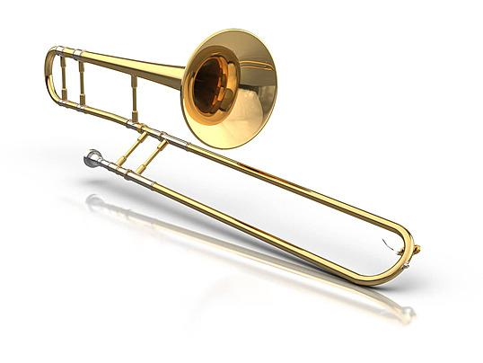
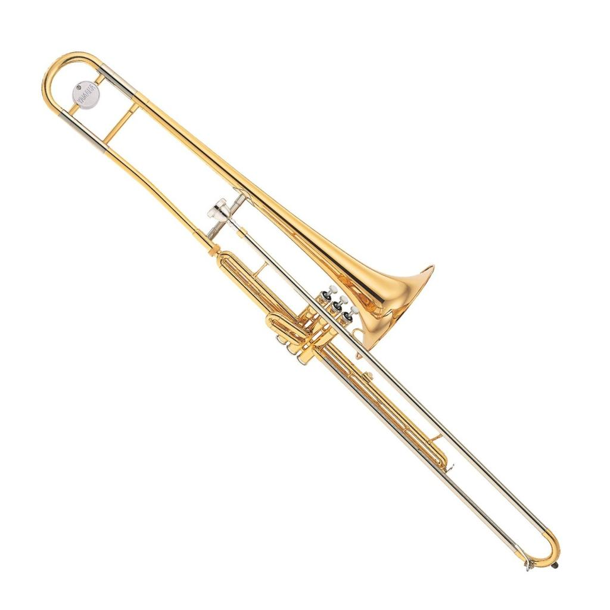
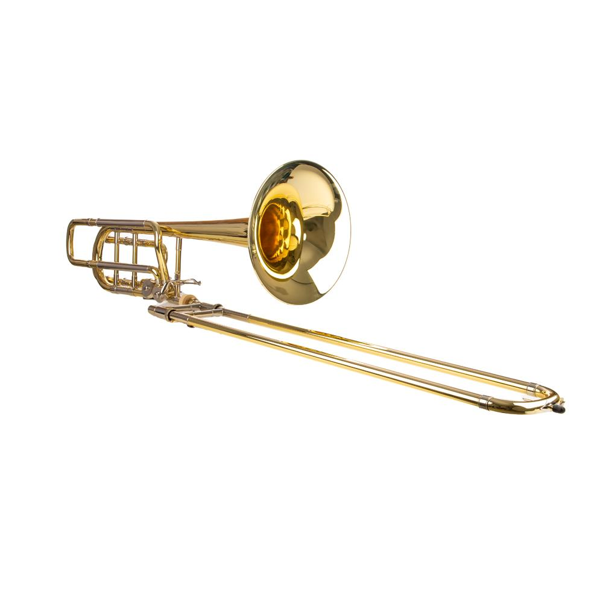

Um instrumento de sopro conhecido por sua sonoridade marcante e sua característica vara deslizante. Descubra como funciona, seus diferentes modelos e sua presença na música.
Conheça mais
O trombone é um instrumento musical de sopro pertencente
à família dos metais. Seu funcionamento acontece através
da vibração dos lábios do músico no bocal, produzindo
o som que é amplificado pelo tubo metálico.
Uma de suas principais características é a vara deslizante,
que permite alterar o comprimento do tubo e produzir
diferentes notas musicais. O instrumento possui uma
sonoridade forte e marcante, sendo muito utilizado em
bandas marciais, orquestras, jazz, pagode e diversos
outros estilos musicais.
Existem diferentes modelos de trombone, cada um com suas características.

É o modelo mais conhecido. Utiliza uma vara deslizante para alterar as notas musicais e é muito comum em bandas e orquestras.

Utiliza válvulas para mudar as notas, funcionando de maneira semelhante a outros instrumentos de metal.

Possui uma sonoridade mais grave e geralmente é utilizado para executar as notas mais baixas em grupos musicais.
Alguns registros meus tocando o instrumento.
Confira alguns sites interessantes para quem gosta de música:
Deixe uma mensagem no formulário abaixo: